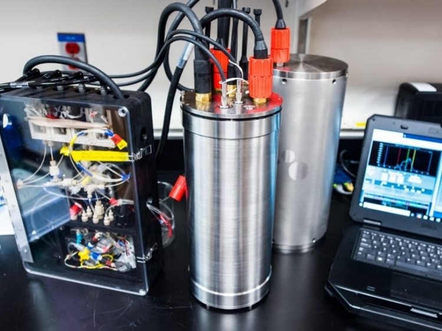

CHANOS II
CHANnelized Optical System II
A blurb about my PhD thesis.
The CHANOS II is a newly developed autonomous optical sensor built for simultaneous dissolved inorganic carbon and pCO2 measurements. It can be modified for pH or other optical measurements. It may be deployed from both mobile and stationary platforms, including AUVs/ROVs, CTD Rosettes, buoys, docks, and laboratory applications.

Carbonate chemistry measurements
Study of the marine CO2 system is critical for understanding global carbon cycling and the impacts of changing ocean chemistry on marine ecosystems. A complete resolution of the marine CO2 system requires measurement of two out of four parameters: partial pressure (pCO2) or fugacity of CO2 (fCO2), dissolved inorganic carbon (DIC), total alkalinity (TA), and pH. Traditional bottle sample titrations for DIC and TA are slow, constraining studies by speed and cost of both sample collection and laboratory methods. Only pH and pCO2 sensors are commercially available for autonomous, in-situ deployments; however, the strong covariance of this pair results in a system with greater calculation errors than a choice of any two other parameters, and high quality pH measurements in turbid coastal environments can be difficult to achieve.
To address the need for autonomous in-situ DIC sampling, we are developing the Channelized Optical System (CHANOS) II, a high-resolution DIC and fCO2 sensor with a targeted precision of ± 2 µmol/kg (DIC) and ± 1 µatm (pCO2) (e.g. laboratory quality measurements). The original CHANOS, described by Wang et al. (2015), could simultaneously measure DIC and pH, but due its size and power requirements was only suitable for time-series measurements from fixed platforms. CHANOS II is designed for near-continuous, high temporal and spatial resolution DIC measurements from both stationary and mobile platforms including CTD Rosettes, ROVs, and AUVs.
You can read about this project on my original WHOI page linked here